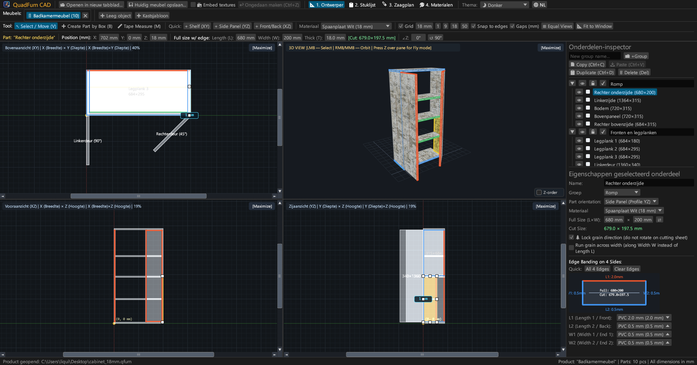
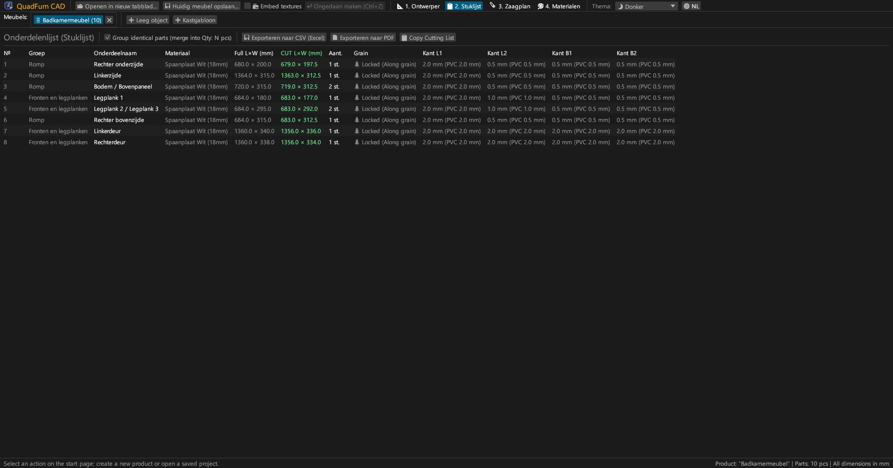
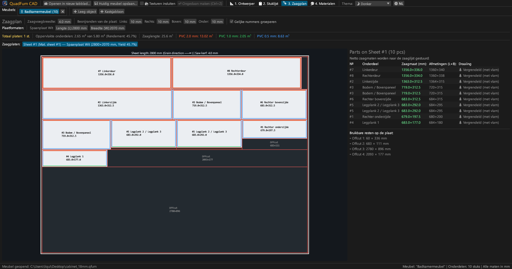
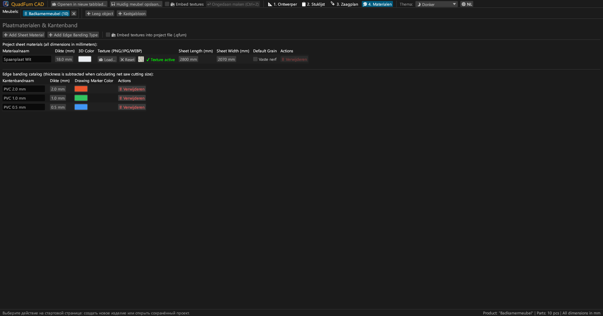
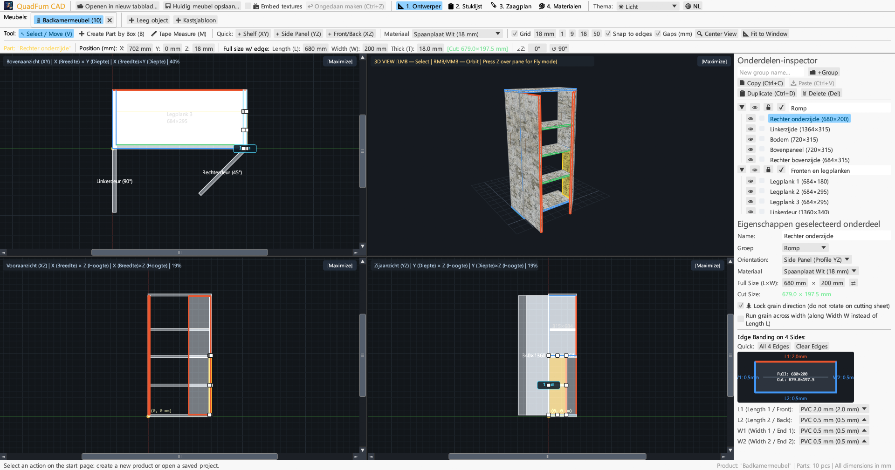
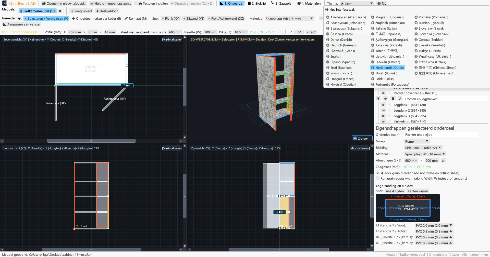

Snelle CAD voor interieurbouwers en meubelmakers. 4-weergaven modellering, formuleberekening, kantenbandaftrek en geoptimaliseerde zaagplannen.

Combineert 4-weergaven tekenen, numerieke controle en zaagoptimalisatie in één applicatie.
Gelijktijdig bewerken in Boven (XY), Voor (XZ), Zijkant (YZ) en 3D met magnetische uitlijning en realtime afstandsmaten.
Directe invoer van coördinaten (X, Y, Z), afmetingen (L × B × D) en rotatiehoek met ingebouwde formuleberekening (bijv. 600-4).
Toewijzing van PVC/ABS-kantenband (0,4–2,0 mm) om exacte netto zaagmaten voor de paneelzaag te berekenen.
Zaagmotor die rekening houdt met nerfrichting, zaagsnede (4,0 mm), voorrandsnede en registratie van bruikbare reststukken.
Werk aan meerdere meubels tegelijkertijd. Kopieer en plak onderdelen tussen tabbladen met materiaaloverdracht.
A4 liggend exportdocument: zaaglijst, 4-weergaven tekeningen, zaagplannen en materiaaloverzicht met +15% marge.





Volledig zelfstandige binaire bestanden zonder externe runtime-afhankelijkheden.
Draagbaar bestand met pictogram, geen installatie vereist.
sudo apt install ./quadfurn_0.2.3_amd64.deb
Universal App-bundel voor Apple Silicon (M1–M4) en Intel x86_64.
| Toets | Actie | Bereik |
|---|---|---|
| V | Selectie- / verplaatsgereedschap (8 handvatten, selectiekader) | 2D-aanzichten |
| B | Onderdeel maken met kader in het actieve vlak | 2D-aanzichten |
| M | Rolmaat (exact meten van afstanden in millimeters) | 2D-aanzichten |
| Z | Vrije vluchtcamera in eerstepersoonsperspectief (WASD) | 3D-venster |
| ← → ↑ ↓ | Onderdelen verplaatsen per rasterstap (Shift voor dubbele stap) | 2D-aanzichten |
| Ctrl + C / V | Kopiëren / plakken van onderdelen (werkt tussen tabbladen) | Alle tabbladen |
| Ctrl + D | Geselecteerde onderdelen dupliceren met verschuiving | Actief project |
| Ctrl + S | Project opslaan als .qfurn / .json bestand | Actief project |
| Ctrl + Z | Laatste actie ongedaan maken (tot 40 stappen) | Actief project |
| Delete / Backspace | Geselecteerde onderdelen verwijderen | Actief project |